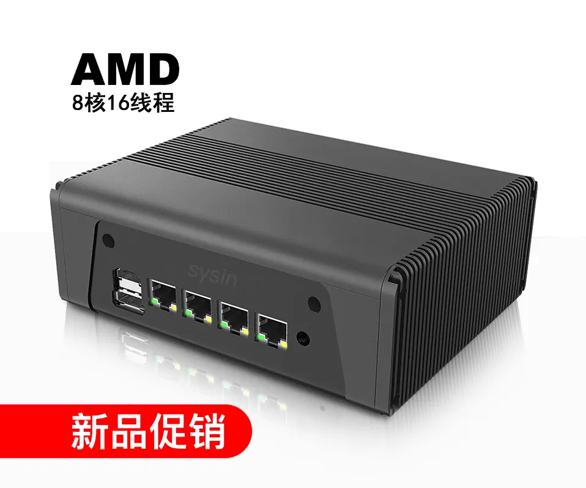
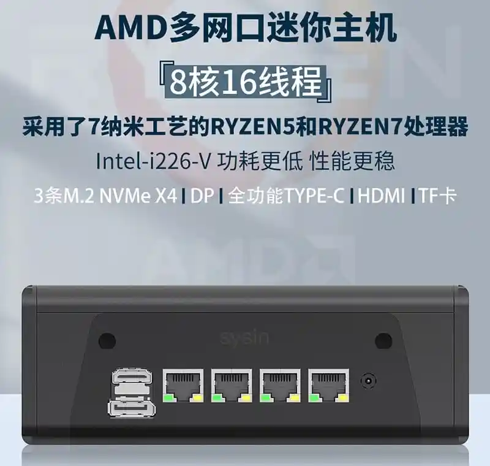
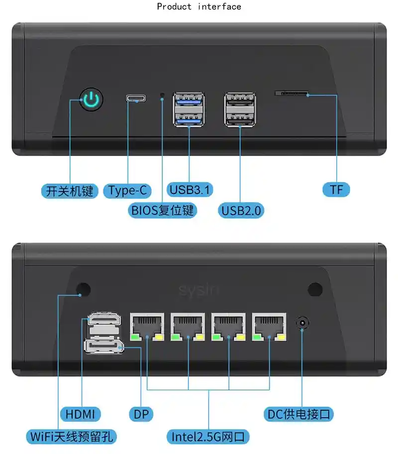

请访问原文链接：支持 ESXi 8.0 的 AMD 小主机：畅网微控 CW-5658，查看最新版。原创作品，转载请保留出处。
作者主页：sysin.org
概述
在测试环境或者家庭实验室（Home lab）中使用 VMware vSphere 作为虚拟化平台非常普遍，笔者更倾向使用 Nano Datacenter 这个词汇来指代这种环境。构建 Nano Datacenter 通常有两大平台即：Apple Mac mini 和 Intel NUC。笔者注意到很多用户是在国产小主机上运行 ESXi 8.0，这类小主机（Mini PC）又俗称软路由，品类繁多，笔者仅以支持 ESXi 虚拟化的角度来看一下如何选择。
Realtek 并不支持 VMware，VMware 现在也不支持 Realtek。Realtek 除了为 Windows、Linux 和 macOS 发布驱动 (sysin)，也为一些罕见小众 Unix 更新驱动，甚至还在为 DOS 和 Novell 开发驱动。但是据称 Realtek 表示没有兴趣为 VMware 创建驱动。
所以我们在选择虚拟化小主机时，一个很重要的原则是不考虑配备 Realtek 网卡的机型。配备 Intel 网卡往往是首选，因为 Intel 与 VMware 兼容的型号最多，高达数百款在官方 HCL 中。
可以看到市面上有很多国产的小主机，这类主机往往考虑到功耗会配备赛扬处理器，但是赛扬几乎是低性能的代名词。如果配备酷睿处理器，价格和功耗都会提高不少。
基于 AMD “Zen 3” Core Architecture 的 AMD Ryzen™ 5 和 7 系列得益于台积电的领先工艺制成，获得了功耗和性能，以及性价比相对的优势。很难找到与 ESXi 版本兼容的 AMD 处理器的超小主机，因为它们往往配备 Relteak 网卡。今天这款来自“畅网微控”的迷你主机套件 CW-5658 有所不同 (sysin)，它基于 AMD Zen 3 架构（台积电 7nm），内置 4 个 Intel 2.5G 网卡与 ESXi 8 兼容。

笔者不是该供应商的利益关联方，因为 VMware 的工程师从马云家购买了该产品，并做了推荐，通常他们很少关注到国内这类产品，对于 VMware 虚拟化小主机，这应该是一个不错的选择。
规格参数

配置参数
| 参数/型号 | CW-5658-5600 黄峥家官方旗舰店 | CW-5658-5800 黄峥家官方旗舰店 | CW-5658-5825 黄峥家官方旗舰店 |
|---|---|---|---|
| CPU | AMD 锐龙™ 5 5600U | AMD 锐龙™ 7 5800U | AMD 锐龙™ 7 5825U |
| 内核 | 6 | 8 | 8 |
| 线程 | 12 | 16 | 16 |
| 基本时钟 | 2.3GHz | 1.9GHz | 2GHz |
| 最大提升 | 4.2GHz | 4.4GHz | 4.5GHz |
| 二级缓存 | 3MB | 4MB | 4MB |
| 三级缓存 | 16MB | 16MB | 16MB |
| 图形核心 | 7 | 8 | 8 |
| 图形频率 | 1800MHz | 2000MHz | 2000MHz |
| 网卡 | Intel I226-V * 4 | 相同 | 相同 |
| 内存 | DDR4-3200，最高 32G * 2 = 64G | 相同 | 相同 |
| 硬盘 | M.2 NVMe x 3，SATA x 2 | 相同 | 相同 |
| 显示接口 | HDMI/DP/TYPE-C | 相同 | 相同 |
| 面板I/O | 见图 | 相同 | 相同 |
| 机箱 | 铝合金材质，黑色、灰色可选 | 相同 | 相同 |
| 尺寸 | 宽 16.8 CM，深 13.17 CM，高 6.3 CM | 相同 | 相同 |
| 供电方式 | DC-IN 12-19v，TYPE-C 12-19V | 相同 | 相同 |
接口

补充说明：
-
SSD 插槽为 M.2 2280，PCIe 3.0，不过 PCIe 4.0 是向下兼容的。
-
硬盘 SATA * 2 看起来是需要拆除风扇替换为 2.5“ SATA。
-
支持 Type-C 供电，意味着可以直选更加小巧的充电器，不过仅有一个 Type-C 口，少了点。
不足之处：
- 全功能 Type-C 接口只有一个确实少了，两个 USB 2.0 接口似乎是多余的。
- 跟其他产品类似电源外置 (sysin)，通常是一个巨大的 DC 充电器，不像 Mac mini 那么优雅，但是这款支持 Type-C 供电可以跟换一个优雅点的充电器，不过只有一个接口，看如何取舍了。
- 其他：不支持 PCIe 4.0，内存如果能支持到 128G 更佳（受限于 CPU）。
限制：不支持 macOS 虚拟化
特别提醒，macOS 默认不支持 AMD CPU，同样也无法在 AMD 虚拟化环境中启动 macOS。虽然社区存在 AMD macOS 案例，并不适合普通用户。
ESXi 8 兼容性
默认兼容所有 ESXi 8 版本：
- VMware ESXi 8.0c - 领先的裸机 Hypervisor (sysin Custom Image)
- VMware ESXi 8.0c macOS Unlocker & OEM BIOS 标准版和厂商定制版
- VMware ESXi 8.0c macOS Unlocker & OEM BIOS 集成网卡驱动和 NVMe 驱动 (集成驱动版)
产品链接

文章用于推荐和分享优秀的软件产品及其相关技术，所有软件默认提供官方原版（免费版或试用版），免费分享。对于部分产品笔者加入了自己的理解和分析，方便学习和测试使用。任何内容若侵犯了您的版权，请联系作者删除。如果您喜欢这篇文章或者觉得它对您有所帮助，或者发现有不当之处，欢迎您发表评论，也欢迎您分享这个网站，或者赞赏一下作者，谢谢！
 支付宝赞赏
支付宝赞赏
 微信赞赏
微信赞赏
赞赏一下